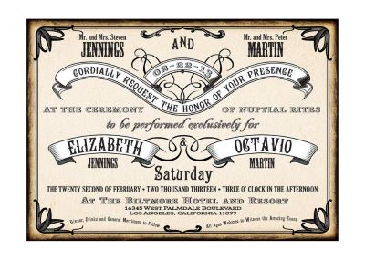

Szabadtéri - Kerti esküvő (Backyard): Az ilyen eseményen a díszítés visszafogottabb,a pasztellszínek dominálnak, a homok, kavicsok, termések (például toboz), esetleg kagyló vagy csigaház dominál a kreatív anyagokon és asztaldíszeken. Amennyiben a ceremónia vízközelben zajlik, ez is érdekes téma lehet a grafikai tervezés során.

Virágos -Tavaszias: Itt a kiadványokon színes virágok, esetleg bogyós gyümölcsök képei jelennek meg, esetleg szőlőlevél indák a pár nevének betűi körül. Az asztaldekoráció természetesen virágokból áll.

Régies - Vintage: Az inspirációt a múltbanézés adja, de modernizált stíluselemekkel. A cél a nosztalgia érzésének felidézése. A pár általában a korszakot adja meg kiindulási alapnak, ez alapján a grafikában visszatérhetnek régies tárgyak, századfordulós divat és ehhez tartozó betűtípus. Külön érdekessé teszi a meghívót az ötlethez illeszkedő a papír választása, melyre természetesen javaslatot adok.

Rusztikus: Egyre gyakoribbak a rusztikus környezetben, csárdákban, lovardáknál, hagyományos környezetben tartott esküvők. A grafikai tervezés során itt érdemes állatmotívumokat (például ló), népviseleti elemeket használni.
A fafelületek és berakások, valamint a spárga visszaköszönhetnek a meghívón is.

Tematikus stílusú esküvő: Itt teljesen egyedi elgondolás alapján dolgozom: a pár hobbija, házikedvencük, megismerkedésük módja, egy közös filmélmény köszönhet vissza a terveken.

Bárhogyan is döntötök, bátran válasszatok olyan témát, amely a Ti egyéniségeteket tükrözi vissza. Ne korlátozzon mások véleménye, ez a Ti napotok!